dmfind: a network medicine tool for the analysis of omics data
dmfind.Rmd
Introduction
This vignette describes how to use the R package dmfind, which implements network diffusion-based analysis of omics data for the identification of differentially enriched modules. The tool implements functions for:
- performing network diffusion (also known as network propagation) of one or more vectors of gene-weights throughout an interactome of gene-gene interactions;
- defining ranked gene lists, where genes are prioritized according to the Network Smoothing Index (NSI), which is proportional to gene-weights and the network proximity of high gene-weights;
- assessing the characteristics of the (top) networks defined by the top ranked genes, based on proximity of high scoring genes, enrichment in high scoring genes, modularity and number of communities;
- obtaining the functional cartography of the top networks;
- comparing multiple networks by topology;
- visualizing the top networks and the relations between communities.
If you use this package please cite:
- Bersanelli*, Mosca*, et al., Network diffusion-based analysis of high-throughput data for the detection of differentially enriched modules. Sci Rep 6, 34841 (2016). https://doi.org/10.1038/srep34841
Getting started
Installation
To install this package, start R and enter:
if (!requireNamespace("devtools", quietly = TRUE)){
install.packages(devtools)
}
devtools::install_github("emosca-cnr/NPATools", build_vignettes=T)
devtools::install_github("emosca-cnr/dmfind", build_vignettes=T)Overview of the workflow
The typical steps are the followings:
- Definition of the input matrices;
- Calculation of the network-smoothing index;
- Definition of the top networks;
- Topological analysis.
We will consider a toy modular network of 500 “genes” obtained using
igraph::barabasi.game(), where a community is enriched in
higher scores compared to the others.
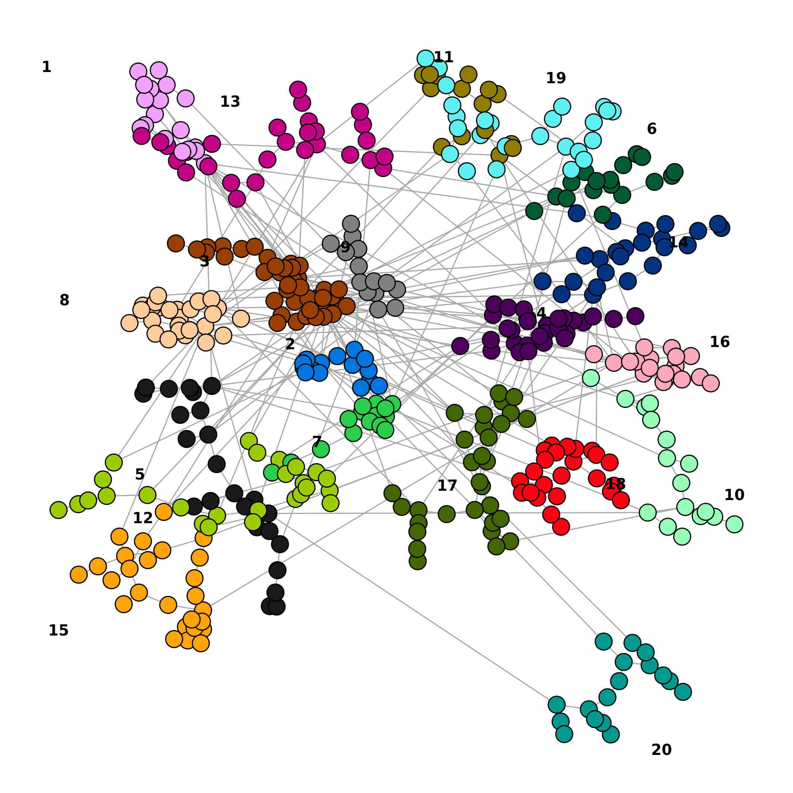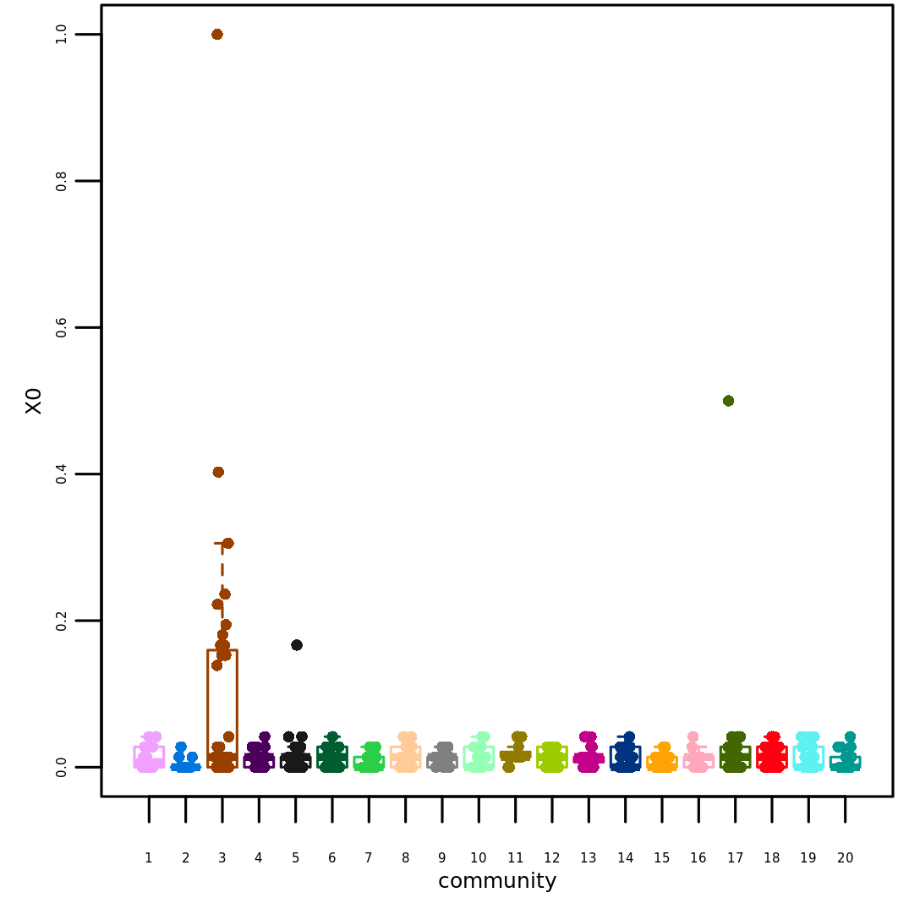
Definition of the input matrices
The analysis requires the following inputs:
- \(\mathbf{W}\), an \(N \times N\) normalized adjacency matrix, which represents the interactions between genes, e.g.:
#> 6 x 6 sparse Matrix of class "dgCMatrix"
#> G1 G2 G3 G4 G5 G6
#> G1 . 0.06900656 0.04800154 . . .
#> G2 0.06900656 . 0.04637389 . . .
#> G3 0.04800154 0.04637389 . . 0.04356068 0.05184758
#> G4 . . . . . .
#> G5 . . 0.04356068 . . 0.07001400
#> G6 . . 0.05184758 . 0.07001400 .\(\mathbf{X}_0\), a \(N \times m\) matrix with column vectors \(\mathbf{x_0}\) that contain gene-related quantities;
a vector to assign each column of \(\mathbf{X}_0\) to any of two classes, only for differential NSI.
IMPORTANT:
- \(\mathbf{W}\) and \(\mathbf{X}_0\) must be defined over the same identifiers;
- the normalization of the adjacency matrix must be done by means of
the function
normalize_adj_mat(), which requires a binary adjacency matrix; - the relevance of the genes corresponding to the rows of \(\mathbf{X}_0\) is proportional to their values, that is, the higher the better; negative values are not allowed.
The network smoothing index (NSI)
The network smoothing index (NSI) compares the initial state \(\mathbf{x}_0\) with the steady-state \(\mathbf{x}_s\) reached after network diffusion:
\[S_j(\mathbf{x_0}) =
\frac{x_{sj}}{x_{0j}+\epsilon}\] where the parameter \(\epsilon\) tunes the relevance of the
initial state. The impact of \(\epsilon\) can be assessed by means of the
function eval_eps(), which finds an optimal value of \(\epsilon\) that takes into account the
network proximity of \(\mathbf{x_0}\)
values and \(\mathbf{x_s}\) values in
the networks composed of the top \(n\)
genes ranked by \(S\). The network
proximity is quantified by \(\Omega\)
function (Bersanelli et al. 2016):
\[\Omega (n) = \mathbf{y}^T(n) \cdot \mathbf{A}(n) \cdot \mathbf{y}(n)\] calculated over \(\mathbf{y} = \mathbf{x_0}\) or \(\mathbf{y} = \mathbf{x_s}\). Let \(O_{\mathbf{x}_0}(\epsilon)\) and \(O_{\mathbf{x}_s}(\epsilon)\) be sums of \(\Omega\) values over the top ranking genes \(\{1, 2, ..., n\}\), calculated using \(\mathbf{x_0}\) and \(\mathbf{x_s}\) respectively. The optimal \(\epsilon\) value is found as follows: \[\text{arg}\,\max\limits_{\epsilon}\, \Bigg( \frac{O_{\mathbf{x}_0}(\epsilon)}{\text{max} (O_{\mathbf{x}_0}(\epsilon))} + \frac{O_{\mathbf{x}_s}(\epsilon)}{\text{max}(O_{\mathbf{x}_s}(\epsilon)}\Bigg)\]
we will see below specific examples for the permutation-adjusted \(S\) and differential \(S\).
Permutation-adjusted \(S\);
The Permutation-adjusted \(S\) is defined as: \[Sp_j = S_j \cdot -log_{10}(p_j)\] where \(p\) is a statistical assessment of \(S\) based o vertex permutations applied to \(\mathbf{X}_0\) and \(\mathbf{W}\). The input matrix \(\mathbf{X}_0\) contains one (typically) or more columns of any type of gene weights (e.g., \(−\text{log}_{10}(p)\)):
#> 6 x 1 sparse Matrix of class "dgCMatrix"
#> M
#> G1 .
#> G2 0.02777778
#> G3 0.01388889
#> G4 .
#> G5 0.19444444
#> G6 .As mentioned above, we must find a value for\(\epsilon\). The default behavior of
eval_eps() consists in testing \(\epsilon\) values that lie from two orders
of magnitude below the minimum of strictly positive \(\mathbf{X}_0\) values to two orders of
magnitude above the maximum of \(\mathbf{X}_0\):
ee <- eval_eps(X0 = X0, W = W)
Generating epsilon based on X0 values...
# orders of magnitude: 6
# values considered: 24
eps: 0.0001388889 0.0002496515 0.0004487462 0.000806617 0.001449887 0.002606157 0.004684544 0.008420423 0.01513563 0.02720616 0.04890281 0.08790234 0.1580036 0.28401 0.5105054 0.9176286 1.649429 2.964833 5.329259 9.579293 17.21869 30.95043 55.63311 100
Performing ND...
optimal eps: 0.5105054In our case study we obtain a value of about 0.51, which is stored in
the element ee$opt_eps. It is possible to perform a visual
inspection of the effect of \(\epsilon\) over \(\Omega\) via
plot_omega_eps()
plot_omega_eps(ee)which shows the values of \(\Omega\) by rank 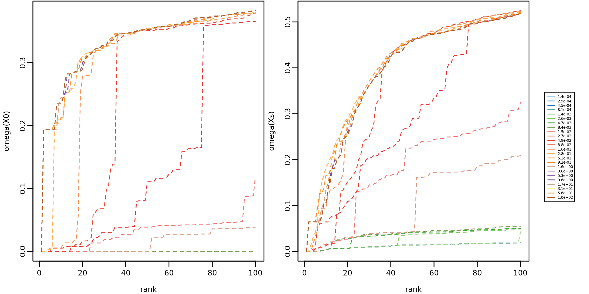 and the values of \(O_{\mathbf{x}_0}(\epsilon))\) and \(O_{\mathbf{x}_s}(\epsilon))\)
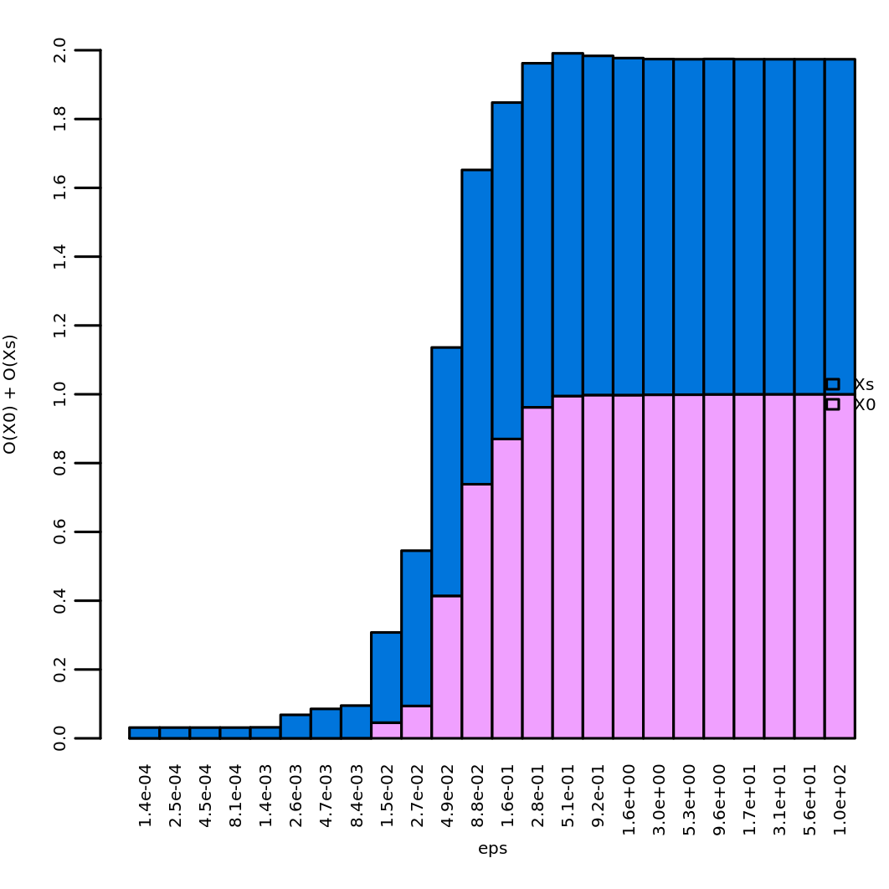
The permutation-based NSI is calculated via
calc_adjND(), where we use the optimal \(\epsilon\) value obtained above and
consider 99 permutations between vertices matched by degree:
resSp <- calc_adjND(X0 = X0, W = W, eps = ee$opt_eps, bin_type = "number", method = "d", cut_par = 2, k=99)
BPPARAM
class: SerialParam
bpisup: FALSE; bpnworkers: 1; bptasks: 0; bpjobname: BPJOB
bplog: FALSE; bpthreshold: INFO; bpstopOnError: TRUE
bpRNGseed: ; bptimeout: 2592000; bpprogressbar: FALSE
bpexportglobals: TRUE; bpforceGC: FALSE
bplogdir: NA
bpresultdir: NA
Permutation type: degree
Total permutations: 100
Minimum possible FDR: 0.01
cut_par: 2
bin_type: number
vertex sets and bins: 307 144
Min possible k: 5.550294e+249
ND over X0 permutations
ND over W permutations
calculation of S
calculation of p-valuesThe result is a list that contains input and output quantities.
#> [1] "X0" "Xs" "eps" "S" "pX0" "pW" "SpX0" "SpW" "p" "Sp"The main stuff that one should consider tuning is the permutation
approach. Please read the documentation ?calc_adjND().
Differential NSI (cases vs controls)
The differential NSI is calculated comparing the NSI of two classes of subjects, based on their average “profiles” \(\bar{\mathbf{x}_{o1}\) and \(\bar{\mathbf{x}_{o2}}\):
\[\Delta S_j = S_j (\bar{\mathbf{x}_{o2}}) - S_j (\bar{\mathbf{x}_{o1}})\] In this case each olumn of the input matrix \(\mathbf{X}_0\) carries sample-level information (e.g., mutation profiles of patients)
#> 6 x 10 sparse Matrix of class "dgCMatrix"
#>
#> G1 . . . . . . 1 . . .
#> G2 . . . . . . . . . .
#> G3 1 1 1 1 1 . . . . .
#> G4 . . . . . . . 1 . .
#> G5 1 1 1 1 1 . . . . .
#> G6 1 1 1 1 . . . . . .which will be averaged to obtain \(\bar{\mathbf{x}_{o1}}\) and \(\mathbf{x}_{o2}\) according to a given
partition of subjects in two classes. To find an appropriate \(\epsilon\) values for each of the two
classes, we run eval_eps() on \(\bar{\mathbf{x}_{o1}}\) and \(\bar{\mathbf{x}_{o2}}\) :
X0ds_means <- calc_X0_mean(X0 = X0ds, classes = classes)
eeds <- eval_eps(X0 = X0ds_means, W = W, top = 100)
enerating epsilon based on X0 values...
# orders of magnitude: 5
# values considered: 20
eps: 0.002 0.003534632 0.006246812 0.01104009 0.01951133 0.03448268 0.0609418 0.1077034 0.190346 0.3364015 0.5945277 1.050718 1.856951 3.28182 5.800013 10.25046 18.11579 32.01633 56.58298 100
Performing ND...
optimal eps: 1.050718 10.25046 In our case study we obtain a value of about 1 and 10 for respectively class 1 and 2. We can now run the analysis by:
resdS <- calc_dS(X0 = X0ds, W = W, classes = classes, eps = eeds$opt_eps)
network diffusion
calculation of dSThe result will contain the following quantities:
#> [1] "X0" "Xs" "eps" "S" "dS"Visualization of the NSI values
From now on, we will focus only on the results of \(Sp\) analysis, because the functions that will be described below work analogously for \(Sp\) and \(\Delta S\).
The results NSI calculation can be visually explored throug the
function plot_NSI(). In the case of \(Sp\) two interesting plots are the
distribution of \(S\) values and
p-value (that is “effect size” vs significance):
plot_NSI(resSp, x="S", y="p")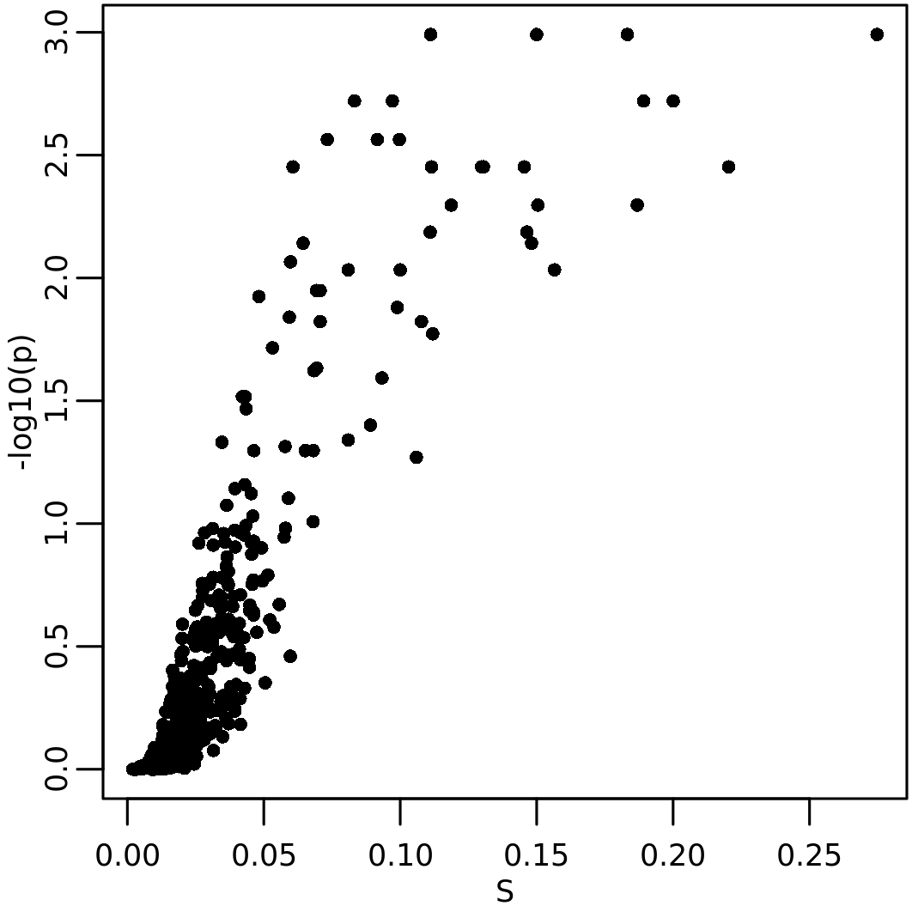
and the relation between \(S_p\) and the initial state:
plot_NSI(resSp, x = "X0", y="Sp")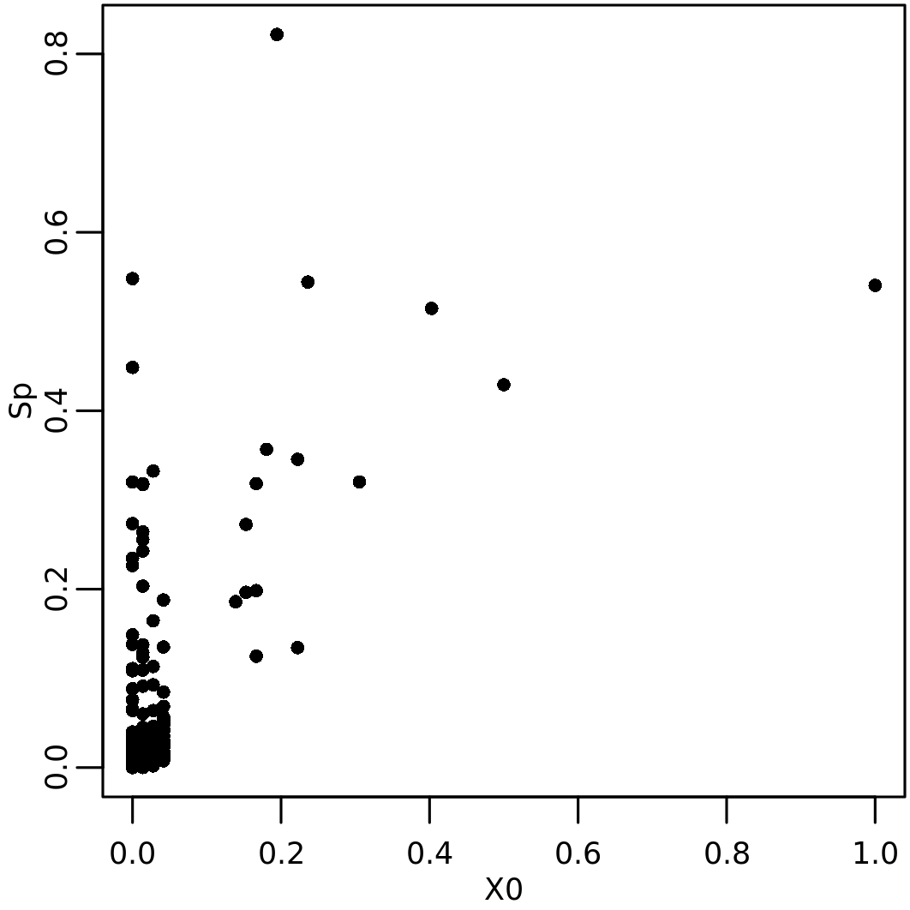
Note that genes with a high initial value gets high \(S_p\). In addition some genes with low initial value get a high \(S_p\), which implies a network proximity of these genes to those with high \(\mathbf{x}_0\).
Definition of the top networks
The package dmfind provides two types of analysis to
guide the choice of the “top” networks, that is the networks that
contain the interactions between genes with high \(\mathbf{X}_0\):
- network resampling (NR), which scores the presence of genes with high NSI values in network proximity;
- network enrichment (NE), which scores network enrichment in genes with high \(\mathbf{X}_0\);
- modularity analysis, which scores network modularity
These analysis are applied over a number of top genes by \(S_p\) or \(\Delta S\). In human genome-wide analysis, a typical number could be 500.
Network resampling
Network resampling can be used to asses the presence of significantly connected modules
nr_res <- NR(G = bg, rankedVector = sort(resSp$Sp[, 1], decreasing = T)[1:50], k = 99)
plot_NR(nr_res)The element nr_res$NRsummary contains the NR results by
rank
#> id rank rankingScore omega p_val
#> G5 G5 1 1.0000000 0.000000 1.00
#> G61 G61 2 0.6668873 0.000000 1.00
#> G286 G286 3 0.6622229 0.441628 1.00
#> G379 G379 4 0.6576295 1.099258 1.00
#> G284 G284 5 0.6263519 1.516964 0.52
#> G455 G455 6 0.5458936 1.878467 0.46The visual representation is obtained plot_NR():
plot_NR(nr_res)We observe that the real \(\Omega\) values begins to be clearly higher than permuted values after approximately 20 genes, which indicates the presence of a high scoring connected gene module:
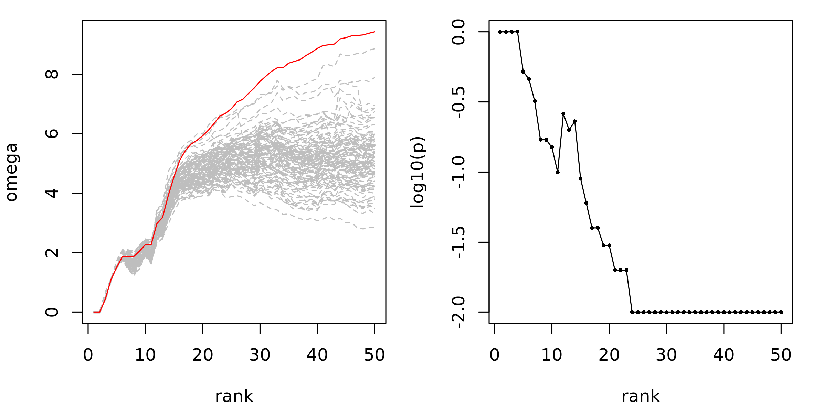
Network Enrichment
The enrichment analysis assess to which extent the top networks are enriched in high \(\mathbf{x}_0\) values. Depending on how \(\mathbf{x}_0\) is defined, this task can be done by means of Over Representation Analysis (ORA) or Gene Set Enrichment Analysis (GSEA). In the following example, we explore the enrichment of the networks formed by the top 50 genes by \(S_p\), using GSEA:
ne_res <- assess_enrichment(G = bg, topList = names(sort(resSp$Sp[, 1], decreasing = T)[1:50]), X0Vector = setNames(X0[, 1], rownames(X0)), type = "gsea", minNetSize = 5, ranks = 1:50)The table ne_res$en_summary cotains the results, which,
as expected, show that the top networks are highly enriched in top
scoring genes:
#> rank size es nes nperm p_val adj_p_val q_val FDRq tags tags_perc list_top
#> 9 13 13 0.9868501 1.647037 100 0.01 0.01043084 NA 0.01002616 9 0.6923077 11
#> 20 24 24 0.9624399 1.645404 100 0.01 0.01043084 NA 0.01002616 11 0.4583333 14
#> 8 12 12 0.9886723 1.640034 100 0.01 0.01043084 NA 0.01002616 8 0.6666667 9
#> 14 18 18 0.9705192 1.638376 100 0.01 0.01043084 NA 0.01002616 10 0.5555556 14
#> 19 23 23 0.9586542 1.635739 100 0.01 0.01043084 NA 0.01002616 10 0.4347826 14
#> 23 27 27 0.9568215 1.633151 100 0.01 0.01043084 NA 0.01002616 13 0.4814815 15
#> list_top_perc lead_edge
#> 9 0.02439024 0.6954689
#> 20 0.03104213 0.4690671
#> 8 0.01995565 0.6712225
#> 14 0.03104213 0.5606877
#> 19 0.03104213 0.4439252
#> 23 0.03325942 0.4951083Comparison of NR and NE
The results of NR and NE can be combined to find possible networks that are optimal based on the two analyses. In our case study we found that the network composed of the top 24 genes is associated with the most significant p-values from NR and NE:
nr_ne_cmp <- cmp_top_net_scores(NRRes = nr_res, netEnrRes = ae_res)
Smallest highest scoring network at rank: 24
Overlapping points detected, adding some jitterThe result is a table the reports the statistics rank by rank:
#> rank p_val_NR p_val_NE score
#> 1 5 0.52 0.02105263 1.219172
#> 2 6 0.46 0.01020408 1.524909
#> 3 7 0.32 0.01020408 1.658422
#> 4 8 0.17 0.01020408 1.894081
#> 5 9 0.17 0.01010101 1.897891
#> 6 10 0.15 0.01000000 1.948715The function also produces the figure NR_vs_NE.png.
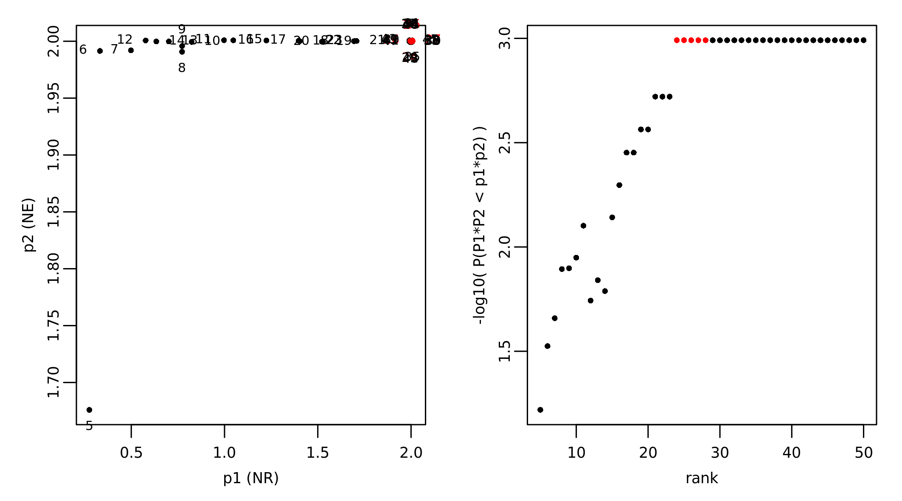
Modularity assessment
The function assess_modularity() quantifies the
community structure and the modularity among the networks composed of
the top ranking genes. This is another piece of information that can be
useful to select the top networks. In this example, we study the
modularity between the top 50 genes sorted by \(Sp\):
assess_mod_res <- assess_modularity(G = bg, vertices = rownames(resSp$Sp)[order(-resSp$Sp[, 1])[1:50]], ranks = 1:50)The output is a table with the trend of the modularity and number of communities at various ranks between the top genes considered.
#> rank n_vertex n_edge algorithm modularity n_community n_vertex_max n_edge_max algorithm_max
#> 1 1 0 0 fastgreedy NaN -Inf 1 0 fastgreedy
#> 2 2 0 0 fastgreedy NaN -Inf 1 0 fastgreedy
#> 3 3 2 1 multilev 0.0000000 1 2 1 multilev
#> 4 4 4 2 fastgreedy 0.5000000 2 2 1 multilev
#> 5 5 5 3 fastgreedy 0.4444444 2 3 2 multilev
#> 6 6 6 4 fastgreedy 0.4062500 3 4 3 fastgreedy
#> modularity_max n_community_max
#> 1 NaN 1
#> 2 NaN 1
#> 3 0.0000000 1
#> 4 0.0000000 1
#> 5 0.0000000 1
#> 6 0.1666667 2These results can be plotted through
plot_modu_trend():
plot_modu_trend(assess_mod_res)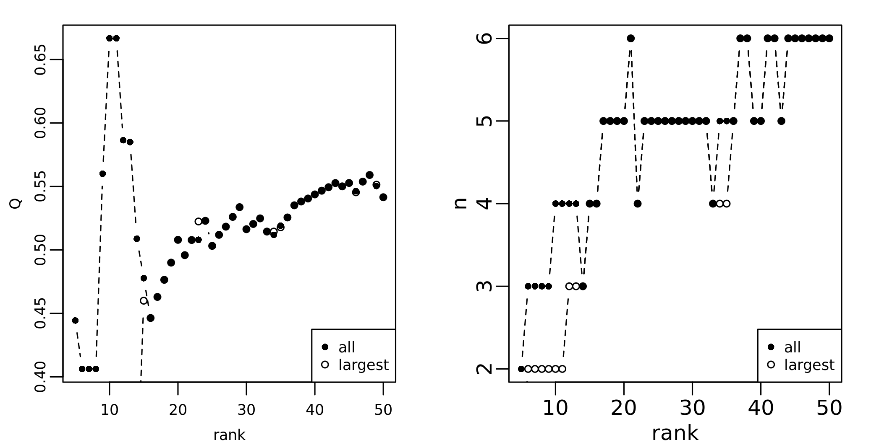
Extraction of the top networks
Once the rank that is associated to the top networks that one
considers optimal, these can be extracted by means of
extract_module(). Here we consider the top 120 genes by
\(S_p\):
top_nets <- extract_module(graph = bg, selectedVertices = rownames(resSp$Sp)[order(-resSp$Sp[, 1])[1:20]], NSIRes = resSp, minSubnetSize = 2)#> IGRAPH 9e6700b UN-- 20 21 -- Barabasi graph
#> + attr: name (g/c), power (g/n), m (g/n), zero.appeal (g/n), algorithm (g/c), name (v/c),
#> | comm_id (v/n), X0 (v/n), Sp (v/n), S (v/n), p (v/n), subnetId (v/n), subnetSize (v/n)
#> + edges from 9e6700b (vertex names):
#> [1] G3 --G5 G3 --G6 G5 --G6 G6 --G29 G5 --G58 G6 --G150 G150--G230 G58 --G284
#> [9] G61 --G284 G61 --G286 G5 --G298 G5 --G379 G3 --G388 G286--G398 G388--G413 G5 --G417
#> [17] G286--G417 G29 --G445 G152--G455 G286--G455 G388--G476Topological charcaterization of top networks
Community structure
The function find_communities() runs a series of
algorithms to detect the presence of communities:
res_comm <- find_communities(top_nets)The element res_comm$info contains the modularity score
\(Q\) and the number of
communities:
#> algorithm modularity n
#> 1 fastgreedy 0.5079365 5
#> 2 multilev 0.4682540 5In this case the fastgreedy algorithm found a better partition with the same number of community, and therefore we assign its results to the igraph object containing the top networks:
top_nets <- assign_communities(top_nets, res_comm$comm$fastgreedy)Functional cartography
The function functional_cartography() performs the
functional cartography analysis (Guimera and
Nunes Amaral 2005), where each gene is scored by its
participation coefficient \(P\) and the
within module degree score, which is a z-score (Guimera and Nunes Amaral 2005) or a probability
of interaction (Joyce et al. 2010). These
values are used to classify genes in 7 classes:
ultra peripheral nodes (R1): nodes with all their links within their module;
peripheral nodes (R2): nodes with most links within their module;
non-hubs connector nodes (R3): nodes with many links to other modules;
non-hubs kinless nodes (R4): nodes with links homogeneously distributed among all modules.
provincial nodes (R5): hub nodes with the vast majority of links within their module (pc <= 0.3);
connector hubs (R6): hubs with many links to most of the other modules (0.30 < pc <= 0.75);
kinless hubs (R7): hubs with links homogeneously distributed among all modules (pc > 0.75).
top_nets <- functional_cartography(top_nets)The output is the igraph object given in input with the addition of
vertex attributes R, P, and
wmd_score.
#> IGRAPH 9e6700b UN-- 20 21 -- Barabasi graph
#> + attr: name (g/c), power (g/n), m (g/n), zero.appeal (g/n), algorithm (g/c), name (v/c),
#> | comm_id (v/n), X0 (v/n), Sp (v/n), S (v/n), p (v/n), subnetId (v/n), subnetSize (v/n),
#> | R (v/c), P (v/n), wmd_score (v/n)
#> + edges from 9e6700b (vertex names):
#> [1] G3 --G5 G3 --G6 G5 --G6 G6 --G29 G5 --G58 G6 --G150 G150--G230 G58 --G284
#> [9] G61 --G284 G61 --G286 G5 --G298 G5 --G379 G3 --G388 G286--G398 G388--G413 G5 --G417
#> [17] G286--G417 G29 --G445 G152--G455 G286--G455 G388--G476A dedicated function exist to obtain the functional cartography:
plot_fc(top_nets, labelBy = "name")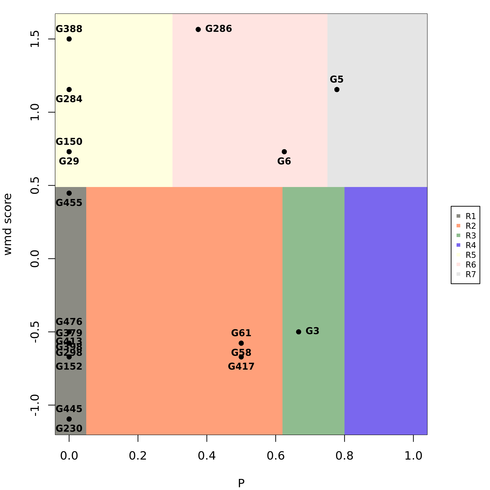
Visualization
The function plot_network() provides a means to produce
network visualizations. Please read its documentation
(?plot_network) for further details. For example, here we
plot the top network producing a layout that takes into account the
community structure and color by community:
lo_tn <- plot_network(top_nets, vertex.size=5, colorQuant = T, colorBy = "comm_id", community = res_comm$comm$fastgreedy, pal=pals::alphabet(max(res_comm$comm$fastgreedy$membership)), labelBy = "name", vertex.label.degree=pi/2, vertex.label.dist=1)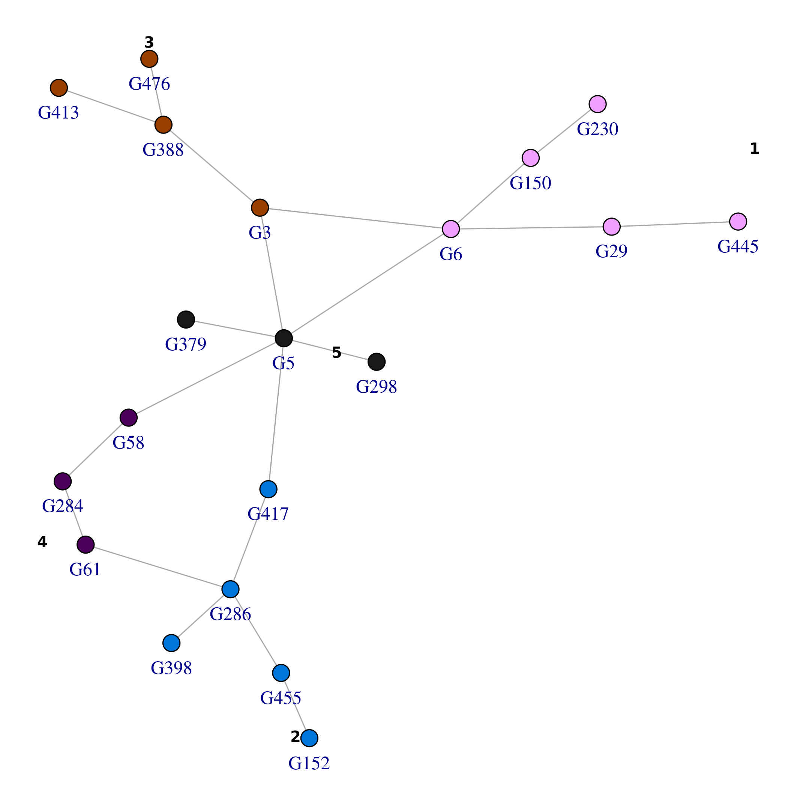
while in this second example we color by \(\mathbf{X_0}\)
plot_network(top_nets, vertex.size=5, colorQuant = T, colorBy = "X0", pal=pals::brewer.purples(3), lo = lo_tn, labelBy = "name", vertex.label.degree=pi/2, vertex.label.dist=1)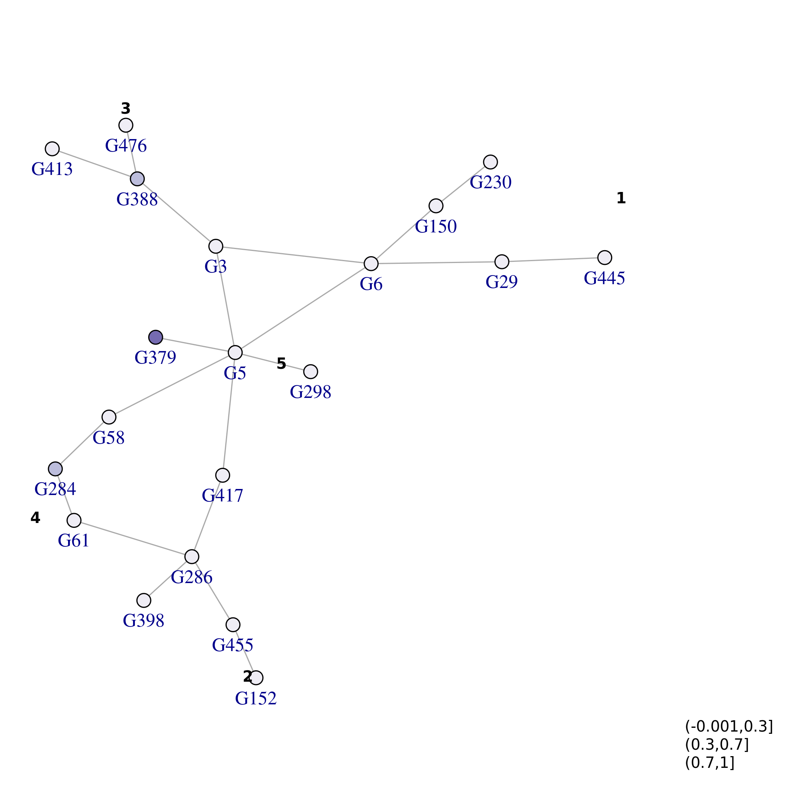 and lastly by \(S_p\):
plot_network(top_nets, vertex.size=5, colorQuant = T, colorBy = "Sp", pal=pals::brewer.purples(3), lo = lo_tn, labelBy = "name", vertex.label.degree=pi/2, vertex.label.dist=1)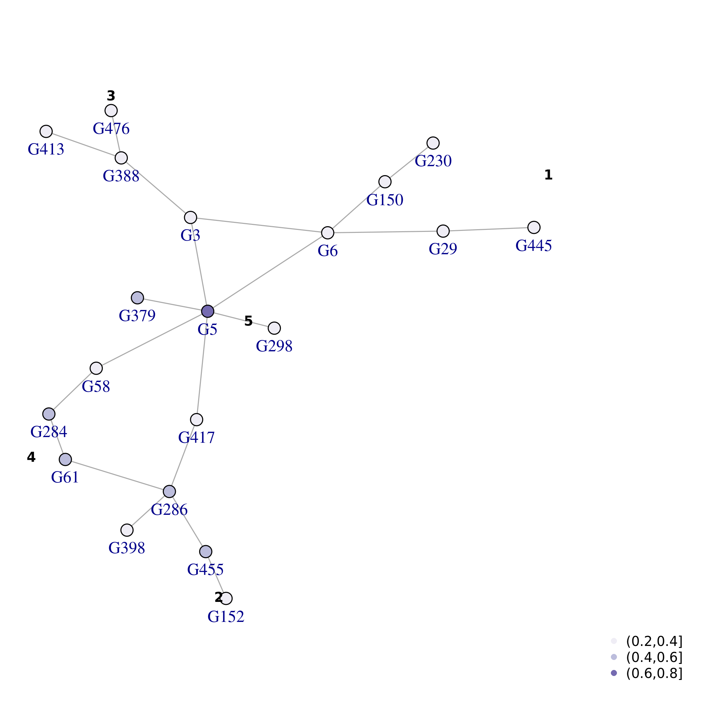
Interactome derived from STRING v12
This package contains an interactome derived from STRING db v12.0 (Szklarczyk et al. 2022), consisting of 17288 genes and 174962 interactions. Only interactions with confidence >=700 and the top 3 interactions with confidence >=400 & < 700 were considered. Confidence score was calculated without text mining evidence, as described at the URL https://string-db.org. Original protein identifiers were mapped to Entrez Gene identifiers using mappings provided by STRING (https://string-db.org) and NCBI (https://ftp.ncbi.nlm.nih.gov, download date 2023-09-19). The interactome is available as an igraph object:
data(dmfind)
string.v12.Entrez.ntm.700.400.k3#> IGRAPH 6f011b4 UN-- 17288 174962 --
#> + attr: name (v/c), symbol (v/c), neighborhood (e/n), neighborhood_transferred (e/n),
#> | fusion (e/n), cooccurence (e/n), homology (e/n), coexpression (e/n),
#> | coexpression_transferred (e/n), experiments (e/n), experiments_transferred (e/n),
#> | database (e/n), database_transferred (e/n), combined_score (e/n)
#> + edges from 6f011b4 (vertex names):
#> [1] 1066--1571 1066--4353 1066--9 1066--978 1066--7365 1066--2990 1066--8824
#> [8] 1066--7363 1066--1576 1066--10 1066--79799 1544--1548 1544--1571 1544--7498
#> [15] 1544--9 1544--1558 1544--56603 1544--1551 1544--8854 1544--7364 1544--316
#> [22] 1544--412 1544--220 1544--8644 1544--1559 1544--1562 1544--1555 1544--216
#> [29] 1544--1579 1544--3284 1544--6820 1544--29785 1544--284541 1544--340665 1544--1586
#> + ... omitted several edgesThe matrix \(W\) can be derived as follows:
A <- get.adjacency(string.v12.Entrez.ntm.700.400.k3, type = "both")
W <- normalize_adj_mat(A)